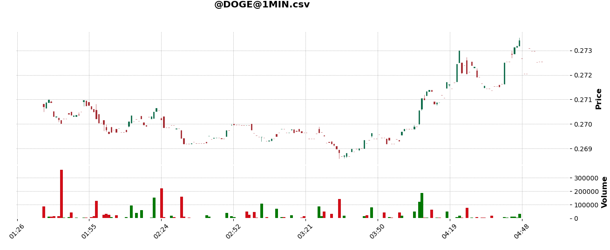

undefined
CLI
This guide will show you all the features of the command line interface that comes with Harvest. To get started type:
python -m harvest -hThis will output the following:
usage: -m [-h] {start,visualize} ...Harvest CLIpositional arguments: {start,visualize}optional arguments: -h, --help show this help message and exitHere you can see that the cli requires one of two arguments start and visualize. Each argument is described below.
start
The start argument is used to run Harvest. Here you can specify your storage, streamer, broker, and which algorithms you want to run. To get started type:
python -m harvest start -hThis will output the following:
usage: -m start [-h] [-o {memory,csv,pickle,db}] [-s {dummy,yahoo,polygon,robinhood,alpaca,kraken,webull}] [-b {paper,robinhood,alpaca,kraken,webull}] [-d DIRECTORY] [--debug | --no-debug]optional arguments: -h, --help show this help message and exit -o {memory,csv,pickle,db}, --storage {memory,csv,pickle,db} the way to store asset data -s {dummy,yahoo,polygon,robinhood,alpaca,kraken,webull}, --streamer {dummy,yahoo,polygon,robinhood,alpaca,kraken,webull} fetches asset data -b {paper,robinhood,alpaca,kraken,webull}, --broker {paper,robinhood,alpaca,kraken,webull} buys and sells assets on your behalf -d DIRECTORY, --directory DIRECTORY directory where algorithms are located --debug, --no-debugThe first option is the storage which is specified with the -o flag. The default is memory which stores asset data only in memory.
The second option is the streamer which is specified with the -s flag. The default is dummy which generates random data and not based on asset data at all. All other streamers fetch data from actual data sources.
The third option is the broker which is specified with the -b flag. The default is paper which is Harvest's internal paper trader.
The fourth option is the directory which is specified with the -d flag. The default is the current working directory. All files in the given directory will be searched, and if a file has an algorithm it will be run by Harvest. A file with an algorithm has to be a python file with a class that inherits from the BaseAlgo class. If HARVEST_SKIP is found anywhere on the first line of the file, it will be skipped. This is a good way to ignore algorithms that you don't want to run.
The fifth option is a boolean option which can be either --debug or --no-debug. The default is --no-debug which informs the Harvest logger not to print debugging messages. Turn this option on if you want more details as to what Harvest is doing.
Examples
Run Harvest without saving asset data to disk, simulate assets, use Harvest paper trader, look for algorithms in the current working directory, and do not show debugging logs.
python -m harvest start Run Harvest with asset data saved as csv files, fetch data from polygon, use alpaca to handle trading, run the algorithms found in the algos folder, and show debugging information.
python -m harvest start -o csv -s polygon -b alpaca -d ./algos --debugvisualize
The visualize argument is used view stored OHLC data that Harvest stores. It expects either a csv or pickle file. It is also dependent on the mplfinance python package which is not installed by default with Harvest. To get started run:
python -m harvest visualize -hThis will output the following:
usage: -m visualize [-h] pathpositional arguments: path path to harvest generated data fileoptional arguments: -h, --help show this help message and exitAs you can see this is a very simple command. The only argument is the path to the csv or pickle file. This path can be relative or absolute.
Example
python -m visualize ./storage/@DOGE@1MIN.csvOutput to terminal:
@DOGE at 1MINopen 0.2708127high 0.27352659999999995low 0.2685754close 0.27254029999999996price change 0.0017275999999999403price change percentage 0.004209551475752374%volume 3486334.8061624Output graph:
